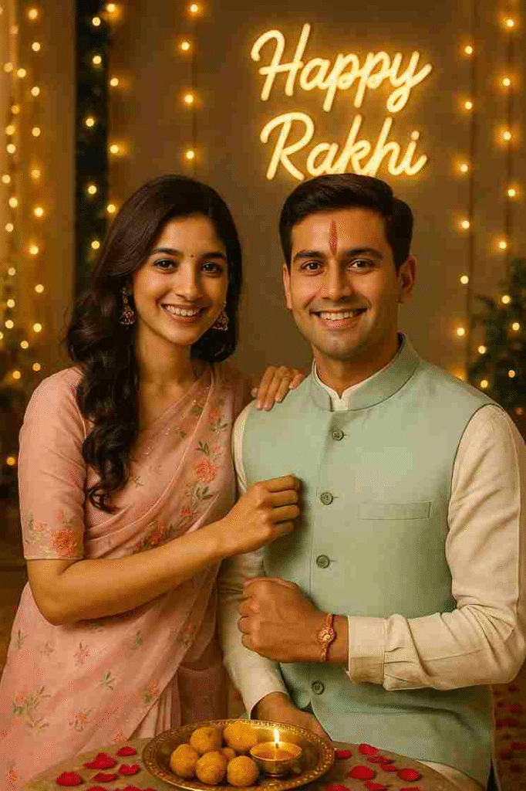
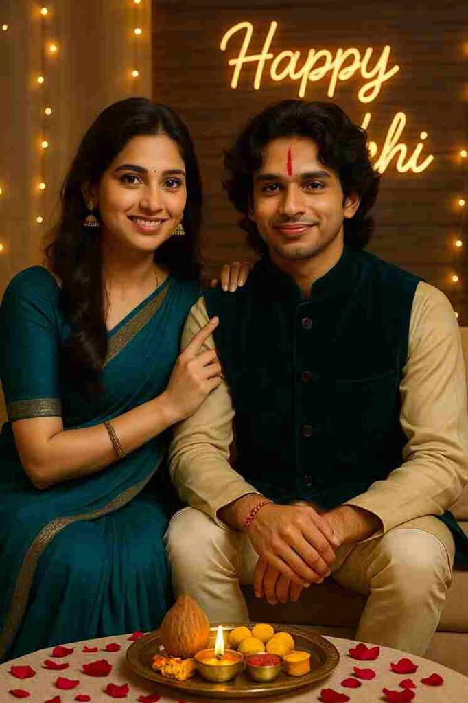

Home / 5 Best Rakshabandhan ChatGPT Photo Editing Prompts 2025
5 Best Rakshabandhan ChatGPT Photo Editing Prompts 2025
By Prompt Library•15 August 2025
Friends, With Raksha Bandhan 2025 coming up, AI photo trends are once again making waves on social media! People everywhere are creating emotional, beautifully styled portraits of brother-sister bonds — all with the help of AI and ChatGPT.
To help you join this special trend, here’s one of my best Raksha Bandhan ChatGPT prompts you can use to generate a stunning AI photo that feels like it came straight out of a professional shoot.
Want more awesome prompts?
Join our community and get the latest viral prompts daily.
A stunning 18-year-old Indian sister wearing a deep red Banarasi silk saree with zari embroidery, traditional gold jewelry, gajra in her hair, and mehendi on her hands is lovingly tying a designer rakhi on her brother’s wrist. The brother, also around 18, wears a cream embroidered sherwani with an ornate golden stole and a small tilak on his forehead. They are seated cross-legged on a Persian carpet in a palace-inspired room with carved wooden arches, antique brass lamps, diya thalis, and vibrant rangoli at their feet. Warm lighting casts a soft glow on their faces. Behind them, a velvet red backdrop displays “Happy Rakhi” in gold foil embossed lettering with soft sparkles and floating marigold petals in the air

? AI PROMPT
A high-resolution vertical photograph of a brother and sister standing side by side, smiling warmly at the camera on Raksha Bandhan. The sister wears a pastel pink organza saree with floral embroidery, soft curls cascading over her shoulder, and jhumka earrings. The brother wears a cream-colored kurta with a mint green Nehru jacket. His forehead displays a fresh vertical red tilak and a colorful rakhi with threads and beads on his wrist. The sister’s hand is resting gently on his shoulder. Scene Details: Decorated home with fairy lights, rose petals on the floor, brass thali with sweets and diya.
Background: A “Happy Rakhi” neon sign in cursive glows softly on the designer panel.
Style: Ultra-realistic, warm light, photorealistic facial match.

? AI PROMPT
A high-resolution vertical photograph of a brother and sister sitting side by side on a low couch, smiling warmly at the camera during Raksha Bandhan. Sister: Dressed in a flowing teal chiffon saree with an elegant gold zari border, soft waves cascading over one shoulder, subtle glam makeup, and traditional gold jhumka earrings. Her right hand gently rests on her brother’s shoulder, with her finger just lifted after applying a fresh vertical red tilak on his forehead. Brother: Wearing a golden beige kurta paired with a deep teal velvet Nehru jacket and cream churidar pants. A colorful rakhi with silk threads and small beads is clearly tied on his wrist. Scene Details: Between them is a beautifully arranged brass puja thali with diya, roli-chawal, a decorative coconut, and an assortment of traditional Indian sweets. The floor is adorned with rose petals, and warm fairy lights twinkle softly around the space. Background: A “Happy Rakhi” neon sign in cursive glows warmly against a designer wood-paneled wall, adding a festive touch to the modern home decor. Style: Ultra-realistic, warm golden lighting, photorealistic facial features, soft shadows, festive ambiance, natural skin tones. Aspect Ratio: 3:4 vertical Resolution: Ultra HD, cinematic and editorial in tone
How to Create a Special Raksha Bandhan Photo (No Editing Skills Needed!)
Creating beautiful Raksha Bandhan photos is now super easy—even if you don’t know how to edit! You just need to tell ChatGPT what kind of photo you want, and it will help create it for you. Follow these simple steps:
Open your browser and search for “Salman Khan Edits”.
Scroll down and look for the latest Raksha Bandhan post.
Click on it and scroll again—you’ll find some ready-made prompts.
Copy any prompt you like.
Open the ChatGPT app (you’ll need to sign in, you can use your Google account).
Upload a photo of the brother and sister.
Paste the prompt into the chat and hit the arrow (or “Create”) button.
Wait a few minutes—your photo will be generated.
Download the final image.
How to Fix a Blurry or Mismatched Face in the Image
Many people message us saying the face in their image looks blurred or doesn’t match the real one. Here’s a quick and easy fix: